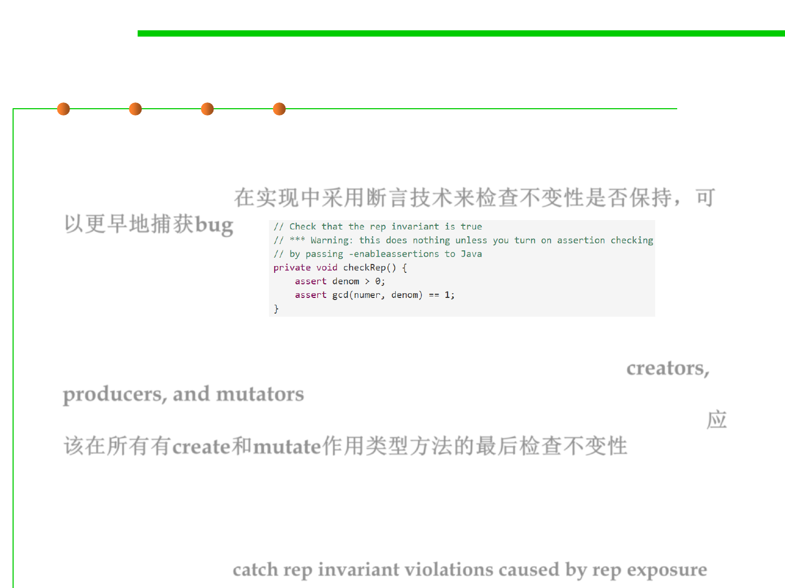

Checking the Rep Invariant
3.3 Abstract Data Type (ADT)
▪ The rep invariant isn’t just a neat mathematical idea. If your
implementation asserts the rep invariant at run time, then you can
catch bugs early. 在实现中采用断言技术来检查不变性是否保持，可
以更早地捕获bug
▪ You should certainly call checkRep() to assert the rep invariant at
the end of every operation that creates or mutates the rep (creators,
producers, and mutators). Look back at the RatNum code above, and
you’ll see that it calls checkRep() at the end of both constructors. 应
该在所有有create和mutate作用类型方法的最后检查不变性
▪ Observer methods don’t normally need to call checkRep(), but it’s
good defensive practice to do so anyway.
– Calling checkRep() in every method, including observers, means you’ll
be more likely to catch rep invariant violations caused by rep exposure.